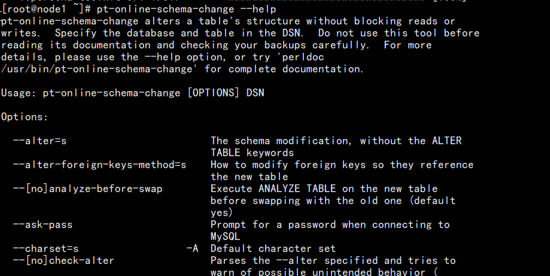
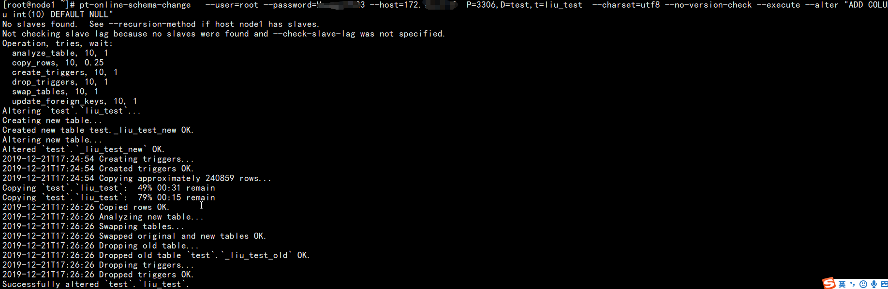
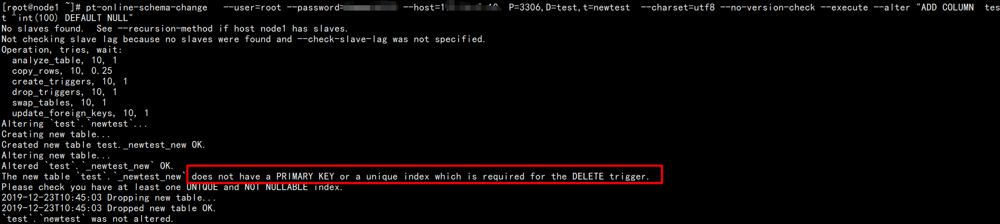

使用场景：在线修改大表结构
在数据库的维护中，总会涉及到生产环境上修改表结构的情况，修改一些小表影响很小，而修改大表时，往往影响业务的正常运转，如表数据量超过500W，1000W，甚至过亿时
在线修改大表的可能影响
（1）在线修改大表的表结构执行时间往往不可预估，一般时间较长
（2）由于修改表结构是表级锁，因此在修改表结构时，影响表写入操作
（3）如果长时间的修改表结构，中途修改失败，由于修改表结构是一个事务，因此失败后会还原表结构，在这个过程中表都是锁着不可写入
（4）修改大表结构容易导致数据库CPU、IO等性能消耗，使MySQL服务器性能降低
（5）在线修改大表结构容易导致主从延时，从而影响业务读取
工具介绍
pt-online-schema-change是Percona公司开发的一个工具，在percona-toolkit包里面可以找到这个功能，它可以在线修改表结构
原理:
在使用之前需确定表table里必须带有主键或者唯一索引！！
（1）首先它会新建一张一模一样的表，表名一般是_new后缀
（2）然后在这个新表执行更改字段操作
（3）然后在原表上加三个触发器，DELETE/UPDATE/INSERT，将原表中要执行的语句也在新表中执行
（4）最后将原表的数据拷贝到新表中，然后替换掉原表
这个过程中有两个问题需要注意：
1. 触发器
因为整个过程是在线的，为了将改表过程中对原始表的更新同时更新到新表上，会创建相应的触发器，每当发生针对原始表的增删改操作，就会触发对新表的相应的操作。所以原始表上不能有其他触发器，即如果原始表上存有触发器，OSC会罢工的。
2. 外键
外键使改表操作变得更加复杂，如果原始表上有外键的话，自动rename原始表和新表的操作就不能顺利进行，必须要在数据拷贝完成后将外键更新到新表上，该工具有两种方法来支持这个操作，具体使用参数（--alter-foreign-keys-method）实现。
--alter-foreign-keys-method
外键改表前后必须持续的链接正确的表，当该工具rename原始表并用新表来取代原始表时，外键必须正确更新到新表上，并且原始表中的外键不再生效
外键会使该工具的操作变得复杂并引入额外风险。当有外键引用该表时，重命名原表和新表的原子操作将无法正常运行。在表结构修改完成后，该工具必须修改外键以指向新表。该工具支持两种方式实现该操作，具体可参考--alter-foreign-keys-method文档。外键也会造成一些副作用。最终的表将会有与原表相同的外键和索引(除非你在ALTER语句进行分别指定)，但对象的名称可能会被略微修改以避免MySQL和InnoDB中的对象名称冲突。
出于安全考虑，该工具并不会真的修改表，除非你指定--execute选项，而该选项默认并未启用。该工具支持各种各样的其它措施以防止非预期的负载或其它问题，包括自动检测从节点，连接到它们，并使用如下安全检查：
（1）在大多情况下，除非表中有PRIMARY KEY或UNIQUE INDEX，该工具才会进行操作。详见--alter选项。
（2）如果检测到有replication filter，该工具会拒绝操作。详见--[no]check-replication-filters选项。
（3）该工具会停止数据拷贝操作，如果它观察到主从延迟大于--max-lag选项的值，默认为1s。
（4）该工具会停止或放弃操作，如果它检测到对服务器造成太多负载。见--max-load和--critical-load选项。
（5）该工具会设置innodb_lock_wait_timeout=1和(对于MySQL 5.5及更新的版本)lock_wait_timeout=60，因此它会更容易成为锁竞争的受害者，并更少破坏其它事务。这些值可以通过指定--set-vars来修改。
（6）该工具会拒绝修改表，如果外键约束有引用它，除非你指定了--alter-foreign-keys-method。
好处:
降低主从延时的风险
可以限速、限资源，避免操作时MySQL负载过高
建议:
在业务低峰期做，将影响降到最低
1.去官网下载对应的版本，官网下载地址:https://www.percona.com/downloads/percona-toolkit/LATEST/
wget https://www.percona.com/downloads/percona-toolkit/3.1/binary/redhat/7/x86_64/percona-toolkit-3.1-1.el7.x86_64.rpm2.安装依赖
yum -y install perl-DBI perl-DBD-MySQL perl-Digest-MD5 perl-IO-Socket-SSL perl-TermReadKey3.安装
rpm -ivh percona-toolkit-3.1-1.el7.x86_64.rpm或者直接使用yum安装
使用yum会自动安装依赖包，比较简单
yum install -y percona-toolkit-3.0.12-1.el6.x86_64.rpm验证
pt-online-schema-change --help
pt-online-schema-change使用
修改表结构而不阻塞读写操作
./bin/pt-online-schema-change --help 可以查看参数的使用
DNS选项常用的有：
--user= 连接mysql的用户名
--password= 连接mysql的密码
--host= 连接mysql的地址
P=3306 连接mysql的端口号
D= 连接mysql的库名
t= 连接mysql的表名
--alter 修改表结构的语句
--execute 执行修改表结构
--charset=utf8 使用utf8编码，避免中文乱码
--no-version-check 不检查和更新percona toolkit版本，也不检查mysql版本等。案例：
添加表字段SQL语句为：ALTER TABLE test.liu_test ADD COLUMN liu int(10) DEFAULT NULL;
pt-online-schema-change --user=root --password=xxx --host=172.16.xx.xx P=3306,D=test,t=liu_test --charset=utf8 --no-version-check --execute --alter "ADD COLUMN liu int(10) DEFAULT NULL"
在使用之前需确定表table里必须带有主键或者唯一索引！！

参考官网：https://www.percona.com/doc/percona-toolkit/LATEST/pt-online-schema-change.html